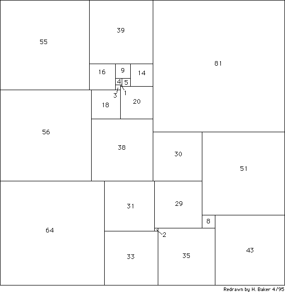

Figure 3(a). [Problem 80] The smallest known (in 1961, and yet today as far as we know) squared square. Reprinted by special permission from Martin Gardner, The Second Scientific American Book of Mathematical Puzzles and Diversions, 1961, Simon and Schuster, New York, New York.

Figure 3(a). [Problem 80] The smallest known (in 1961, and yet today as far as we know) squared square. Reprinted by special permission from Martin Gardner, The Second Scientific American Book of Mathematical Puzzles and Diversions, 1961, Simon and Schuster, New York, New York.
[Retyped and formatted in html ('Web browser format) by Henry Baker, April, 1995.]